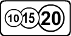
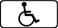

Информационные знаки информируют о расположении населенных пунктов и других объектов, а также об установленных или о рекомендуемых режимах движения.
Общие ограничения скорости, установленные Правилами дорожного движения Российской Федерации.
Скорость, с которой рекомендуется движение на данном участке дороги. Зона действия знака распространяется до ближайшего перекрестка, а при применении знака 6.2 совместно с предупреждающим знаком определяется протяженностью опасного участка.
Изображение на знаке символа таблички 8.8 "Платные услуги"  указывает на организацию парковки (парковочного места) на платной основе. Изображение на знаке символа таблички 8.17 "Инвалиды"  указывает на организацию парковки (парковочного места) только для транспортных средств, на которых установлен опознавательный знак "Инвалид". Действие знака, обозначающего парковку у края проезжей части около тротуара или на нем, распространяется до ближайшего перекрестка либо ограничивается табличкой 8.2.1. (в ред. Постановлений Правительства РФ от 23.07.2013 № 621, от 06.10.2022 № 1769)
Направления движения к обозначенным на знаке населенным пунктам и другим объектам. На знаках могут быть нанесены изображения знака 6.14.1, символы автомагистрали, аэропорта и иные пиктограммы. На знаке 6.9.1 могут быть нанесены изображения других знаков, информирующих об особенностях движения. В нижней части знака 6.9.1 указывается расстояние от места установки знака до перекрестка или начала полосы торможения.
Знак 6.9.1 применяется также для указания объезда участков дорог, на которых установлен один из запрещающих знаков 3.11 - 3.15.
Маршрут движения при запрещении на перекрестке отдельных маневров или разрешенные направления движения на сложном перекрестке.
Направления движения к пунктам маршрута. На знаках может быть указано расстояние (км) до обозначенных на них объектов, нанесены символы автомагистрали, аэропорта и иные пиктограммы.
Наименование иного объекта, чем населенный пункт (река, озеро, перевал, достопримечательность и тому подобное).
6.14.1 — номер, присвоенный дороге (маршруту); 6.14.2 — номер и направление дороги (маршрута).
Рекомендуемое направление движения для грузовых автомобилей, тракторов и самоходных машин, если на перекрестке их движение в одном из направлений запрещено.
Место остановки транспортных средств при запрещающем сигнале светофора (регулировщика).
Направление объезда закрытого для движения участка проезжей части на дороге с разделительной полосой или направление движения для возвращения на правую проезжую часть.
Указывает направление к аварийному выходу и расстояние до него.
Обозначает места возможного применения работающих в автоматическом режиме стационарных или передвижных специальных технических средств, имеющих функции фото- и киносъемки, видеозаписи для фиксации нарушений правил дорожного движения. (абзац введен Постановлением Правительства РФ от 31.12.2020 № 2441)
Знак 6.22 устанавливается вне населенного пункта на расстоянии 150 - 300 м до зоны контроля работающих в автоматическом режиме стационарных или передвижных специальных технических средств, имеющих функции фото- и киносъемки, видеозаписи для фиксации нарушений правил дорожного движения, в населенном пункте - со знаками 5.23.1, 5.23.2 и 5.25 . (абзац введен Постановлением Правительства РФ от 31.12.2020 № 2441)
При необходимости знак 6.22 применяется с табличками 8.1.1 и 8.1.3, 8.1.4 . (абзац введен Постановлением Правительства РФ от 31.12.2020 № 2441)
На знаках 6.9.1, 6.9.2, 6.10.1 и 6.10.2, установленных вне населенного пункта, зеленый или синий фон означает, что движение к указанному населенному пункту или объекту будет осуществляться соответственно по автомагистрали или другой дороге. На знаках 6.9.1, 6.9.2, 6.10.1 и 6.10.2, установленных в населенном пункте, вставки с фоном зеленого или синего цвета означают, что движение к указанному населенному пункту или объекту после выезда из данного населенного пункта будет осуществляться соответственно по автомагистрали или другой дороге; белый фон знака означает, что указанный объект находится в данном населенном пункте.
На знаках 6.9.1 , 6.9.2 , 6.10.1 , 6.10.2 и 6.11 коричневый фон означает туристический объект. (абзац введен Постановлением Правительства РФ от 06.10.2022 № 1769)